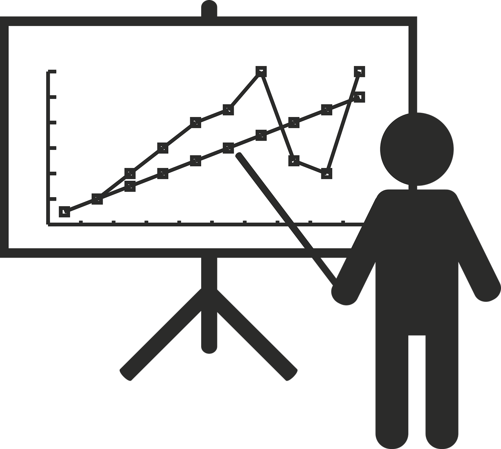

Extra Unit
Giving Presentations
This section contains a collection of helpful information on how to give good presentations. There are also several links to pages that offer tips, as well as a downloadable presentation course.
Tips to 'Wake Up' Your Presentations
When giving a presentation, it is also important to keep your audience's attention. Here are some tips:- Insert a quote
- Tell an anecdote
- Incorporate an image
- Put statistics into context
- Use memorable language
- Use analogies
'Tricks of the Trade' for Good Presentations
Refer to your audience
“As you know,”
“As many of you may have heard,”
“As you may have already noticed,”
“As you know,”
“As many of you may have heard,”
“As you may have already noticed,”
Refer to common experiences
“We’ve been hearing a lot about ______ on the news these days”
“Just today, I saw in the newspaper that...”
“We’ve been hearing a lot about ______ on the news these days”
“Just today, I saw in the newspaper that...”
Turn questions into statements
Instead of saying, “This is important because...,”
begin by saying
“Now why is this important?”
Instead of saying, “This is important because...,”
begin by saying
“Now why is this important?”
Add a quote or a proverb
that captures a point you want to make.
that captures a point you want to make.
Use descriptive language
that allows your audience to 'see' what you are talking about.
that allows your audience to 'see' what you are talking about.
Cluster together words
that have the same sound (this is called “alliteration”).
that have the same sound (this is called “alliteration”).
Include some contrast
Compare and contrast information.
Compare and contrast information.
Group things into three
"X, Y, and Z"
"Past, Present, and Future"
"X, Y, and Z"
"Past, Present, and Future"
How Can We Increase Clarity?
class
Narrow your topic
If your topic is very broad, choose one aspect of it to talk about.
people
Tell the audience why
It will be useful or interesting for them to know how the information you will give can help or benefit them.
speaker_notes
Give clear examples
of what you are talking about. Don't just stay on an abstract level.Quotes About the United Nations
Some Quotes About the Organization...
"The Charter of the United Nations is the first, most daring code of behaviour addressed to the most
powerful of all institutions on the planet—armed nations."
U Thant, Secretary-General, 1961 - 1971
"I am not a country of 50 million people. I have no army. I have no land, no police. the importance of the United Nations comes from its moral value, its credibility."
Boutros Boutros-Ghali, Secretary-General, 1992 - 1996
"With all its defects, with all the failures that we can check up against it, it still represents man's best organized hope to substitute the conference table for the battlefield."
Former US President Dwight Eisenhower,
United Nations Day speech, 24 October 1954
“The UN wasn’t created to take you to Heaven. It was made to keep you from going to Hell.”
Henry Cabot Lodge
U Thant, Secretary-General, 1961 - 1971
"I am not a country of 50 million people. I have no army. I have no land, no police. the importance of the United Nations comes from its moral value, its credibility."
Boutros Boutros-Ghali, Secretary-General, 1992 - 1996
"With all its defects, with all the failures that we can check up against it, it still represents man's best organized hope to substitute the conference table for the battlefield."
Former US President Dwight Eisenhower,
United Nations Day speech, 24 October 1954
“The UN wasn’t created to take you to Heaven. It was made to keep you from going to Hell.”
Henry Cabot Lodge
Some Quotes From Former Secretary-General Ban Ki Moon...

"My greatest concern is that today’s financial crisis evolves into tomorrow’s human crisis."
“The science is clear. Global emissions must peak in less than a decade to avert the worst consequences of climate change.”
"All across Africa—the most vulnerable continent—climate change threatens to roll back years of development gains."
"Climate change is the pre-eminent geopolitical and economic issue of the 21st century. It rewrites the global equation for development, peace and prosperity."
"It will increase pressure on water, food and land…. reverse years of development gains…. exacerbate poverty…. destabilize fragile states and topple governments."
"Some say tackling climate change is too expensive. They are wrong. The opposite is true. We will pay an unacceptable price if we do not act now."
"The danger posed by war to all of humanity and to our planet is at least matched by the climate crisis and global warming."
“The science is clear. Global emissions must peak in less than a decade to avert the worst consequences of climate change.”
"All across Africa—the most vulnerable continent—climate change threatens to roll back years of development gains."
"Climate change is the pre-eminent geopolitical and economic issue of the 21st century. It rewrites the global equation for development, peace and prosperity."
"It will increase pressure on water, food and land…. reverse years of development gains…. exacerbate poverty…. destabilize fragile states and topple governments."
"Some say tackling climate change is too expensive. They are wrong. The opposite is true. We will pay an unacceptable price if we do not act now."
"The danger posed by war to all of humanity and to our planet is at least matched by the climate crisis and global warming."
Some Quotes From Former Secretary-General Kofi Annan...

“Education is a human right with immense power to transform. On its foundation rest the cornerstones
of freedom, democracy and sustainable human development.”
“More than ever before in human history, we share a common destiny. We can master it only if we face it together. And that, my friends, is why we have the United Nations.”
“More countries have understood that women's equality is a prerequisite for development.”
“The Lord had the wonderful advantage of being able to work alone.”
“More than ever before in human history, we share a common destiny. We can master it only if we face it together. And that, my friends, is why we have the United Nations.”
“More countries have understood that women's equality is a prerequisite for development.”
“The Lord had the wonderful advantage of being able to work alone.”
Some Quotes About Peace and Other Ideals...
"I object to violence because when it appears to do good, the good is only temporary; the evil it
does is permanent."
Mahatma Ghandi, first Prime Minister of India
"Wars are poor chisels for carving out peaceful tomorrows."
Reverend Martin Luther King
"If you have built castles in the air, your work need not be lost. Now put foundations under them."
Henry David Thoreau
"If you have discovered how to disagree without being disagreeable, then you have discovered the secret of getting along."
Bernard Meltzer
“An eye for an eye just ends up making everyone blind.”
Mahatma Ghandi
“I have nothing new to teach the world. Truth and non-violence are as old as the hills. All I have done is to try experiments in both on as vast a scale as I could.”
Mahatma Ghandi
“The pens which write against disarmament are made from the same steel from which guns are made."
Aristide Briand, French statesman, Nobel peace Prize winner, 1926
“Until lions have their historians, tales of the hunt will always glorify the hunter.”
African proverb
“If we do not change our direction, we are likely to end up where we are headed for.”
Chinese proverb
“When evil is allowed to compete with good, evil has an emotional populist appeal that wins out unless good men and women stand as a vanguard against abuse.”
Hannah Arendt
"Peace is a journey of a thousand miles and it must be taken one step at a time."
Lyndon B Johnson
"Mankind must put an end to war, or war will put an end to mankind...War will exist until that distant day when the conscientious objector enjoys the same reputation and prestige that the warrior does today."
John F. Kennedy
"Peace is a daily, a weekly, a monthly process, gradually changing opinions, slowly eroding old barriers, quietly building new structures."
John F. Kennedy
"Peace is not merely a distant goal that we seek, but a means by which we arrive at that goal."
Martin Luther King, Jr.
"Wars are poor chisels for carving out peaceful tomorrows."
Martin Luther King, Jr.
“No one has the right to sit down and feel hopeless. There is too much work to do.”
Dorothy Day, peace activist
Mahatma Ghandi, first Prime Minister of India
"Wars are poor chisels for carving out peaceful tomorrows."
Reverend Martin Luther King
"If you have built castles in the air, your work need not be lost. Now put foundations under them."
Henry David Thoreau
"If you have discovered how to disagree without being disagreeable, then you have discovered the secret of getting along."
Bernard Meltzer
“An eye for an eye just ends up making everyone blind.”
Mahatma Ghandi
“I have nothing new to teach the world. Truth and non-violence are as old as the hills. All I have done is to try experiments in both on as vast a scale as I could.”
Mahatma Ghandi
“The pens which write against disarmament are made from the same steel from which guns are made."
Aristide Briand, French statesman, Nobel peace Prize winner, 1926
“Until lions have their historians, tales of the hunt will always glorify the hunter.”
African proverb
“If we do not change our direction, we are likely to end up where we are headed for.”
Chinese proverb
“When evil is allowed to compete with good, evil has an emotional populist appeal that wins out unless good men and women stand as a vanguard against abuse.”
Hannah Arendt
"Peace is a journey of a thousand miles and it must be taken one step at a time."
Lyndon B Johnson
"Mankind must put an end to war, or war will put an end to mankind...War will exist until that distant day when the conscientious objector enjoys the same reputation and prestige that the warrior does today."
John F. Kennedy
"Peace is a daily, a weekly, a monthly process, gradually changing opinions, slowly eroding old barriers, quietly building new structures."
John F. Kennedy
"Peace is not merely a distant goal that we seek, but a means by which we arrive at that goal."
Martin Luther King, Jr.
"Wars are poor chisels for carving out peaceful tomorrows."
Martin Luther King, Jr.
“No one has the right to sit down and feel hopeless. There is too much work to do.”
Dorothy Day, peace activist
Helpful Links
Leadership Presentation SkillsThis site provides tips on organizing a talk, developing it, using effective voice tone and body language and also listening actively to audience questions.
Free Articles on Public Speaking
This site provides articles on public speaking.
Toastmasters International
This is the official site of Toastmasters, the international, non-profit organization for people who want to improve their public speaking.